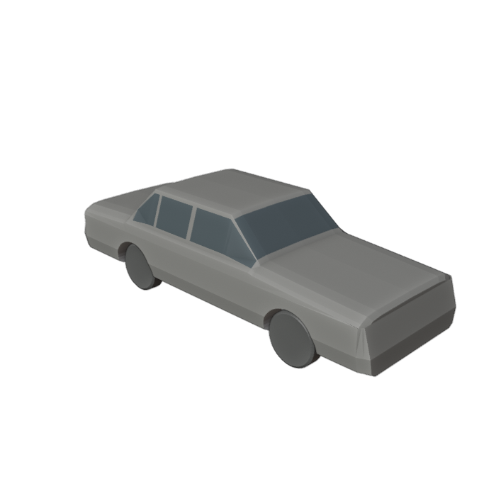

Loading the review…
The GLB has unresolved geometry findings. Use this preview to assess shape; it is not approved for game use.
Blender 4.3.2 ran in Codex. Final source: one closed body; export validator: failed. Seven end-region overlap candidates remain. Model: 3,748 triangles.
Long hood and upright cabin are plausible; roof corners, shoulders and front/rear forms need refinement. No additional correction cycle or game integration.
Sources and dimension notes · GLB validation · Supplemental checks
Reference photos: Vauxford, CC BY-SA 4.0; OSX, public domain. The comparison photo is cropped, flipped and resized.